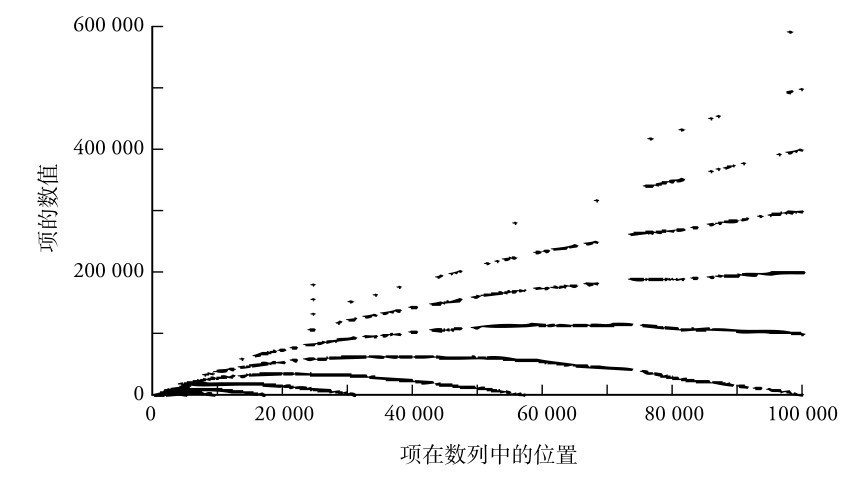
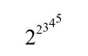
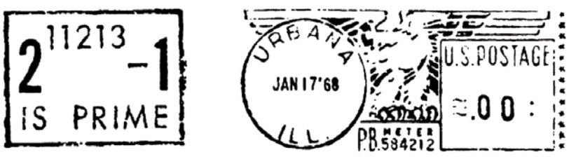
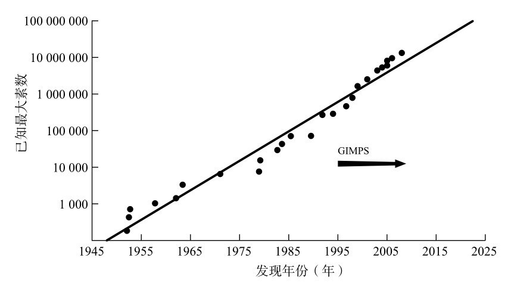
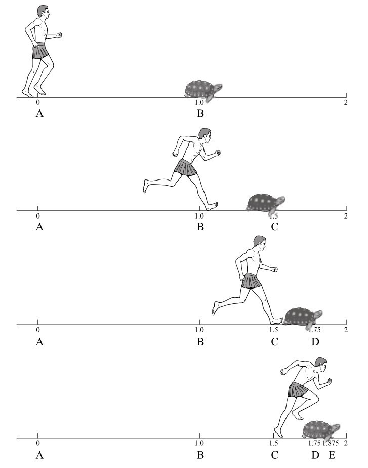
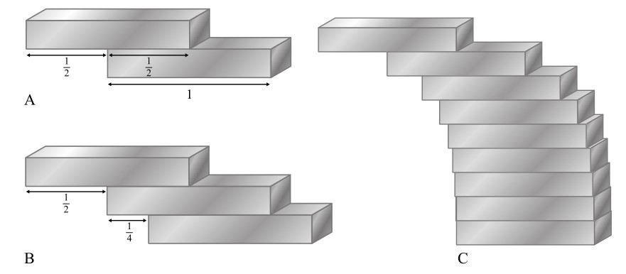
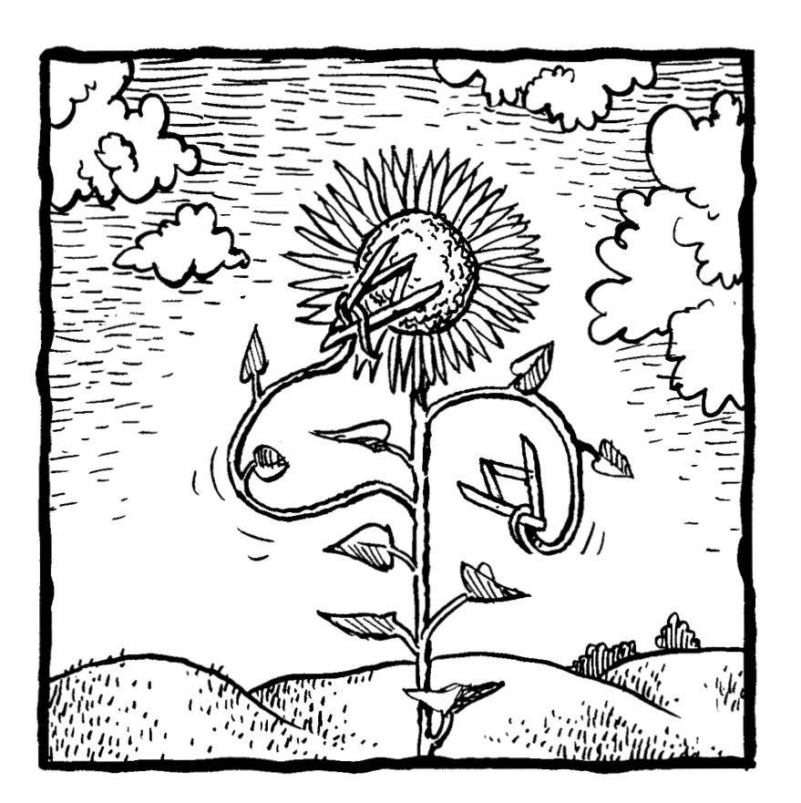

在亚特兰大，我遇到了一个有特殊爱好的人。尼尔·斯隆（Neil Sloane）喜欢收集数据。他收集的不是单独的数字，那太愚蠢了，他收集的是有一定顺序的一系列数字，也就是数列。例如，自然数是一个数列，这个数列可以定义为，数列中的第n项是n：
1，2，3，4，5，6，7，…
1963年，斯隆在康奈尔大学读研究生时就开始收藏数列，他一开始把收集的数列写在卡片上。对于喜欢有序列表的人来说，把有序列表也整理成有序列表是非常有意义的事情。1973年，他已经收集了2400个数列，出版了一本名为《整数列手册》的书。20世纪90年代中期，他的藏品已经达到5500个。在互联网出现后，这些藏品终于找到了它们的理想媒介。斯隆的这份清单迅速发展成为《在线整数列百科全书》，这本百科全书目前有16万多个条目，并且还在以每年约一万条的速度扩充。
斯隆给人的第一印象是一个典型的宅男。他很瘦，有些秃顶，戴着一副又厚又方的眼镜。然而，他十分精壮有力，保持着一种平衡，这是他的另一个兴趣——攀岩带来的好处。斯隆喜欢挑战上升的地质构造，就像他喜欢攀升的数值一样。在斯隆看来，研究数列和攀岩的相似之处在于，两者都需要精妙的解谜技巧。我认为还有另一个类似之处：寻找数列中的数字就像登山，每当你到达第n项时，你就自然而然地想要找到第n+1项。想要找到下一项的想法，就像试图攀登越来越高的山峰一样。当然，登山者会受到地理的限制，而数列往往会一直延续下去。
斯隆就像一个纪录收藏家，用多彩的珍品堆满了他最喜爱的藏书架，他的《百科全书》里既有普通的数列，也有诡异的数列。比如，他的收藏包括下面的数列，也就是“零序”。（《百科全书》中的每个数列都有一个参考编号，以字母A为前缀。零序是斯隆收藏的第4个数列，因此被编号为A4。）
（A4）0，0，0，0，0，…
作为最简单的无限数列，它是藏品中最没有活力的，尽管它确实具有某种虚无主义的魅力。
对斯隆来说，除了在新泽西州AT&T（美国电话电报公司）实验室做数学家的本职工作外，维护《百科全书》也是一项全职工作。但他不再需要花时间到处寻找新数列了。随着《百科全书》的成功，他不断收到投稿。它们有些来自专业的数学家，还有更多来自对数字着迷的外行人。数列被收录只有一个标准，它必须是“定义明确且有趣”的。定义明确意味着数列中的每一项都可以用代数或语言来描述。而有趣与否则取决于斯隆的判断，当他不确定时，他会倾向于接受。然而，定义明确且有趣并不意味着在数学上有什么意义。历史、传说和怪癖都在公平竞争。
百科全书中也收录了一些古代数列：
（A100000）3，6，4，8，10，5，5，7
这个数列是从伊尚戈骨上的标记转换而来的，这一古老的手工制品在今刚果民主共和国被发现，距今已2.2万年。这根猴骨最初被认为是一根计数棒，但后来有人认为它的规律是，3，3的两倍，4，4的两倍，10，10的一半。这种规律表明当时的人们掌握了较为复杂的算术推理。百科全书中还有一个可恶的数列：
（A51003）666，1666，2666，3666，4666，5666，6660，6661，…
这个数列也被称为“野兽数列”，因为它们在十进制下包含了字符串666 [1] 。
下面来看一个简单的“托儿所数列”：
（A38674）2，2，4，4，2，6，6，2，8，8，16
这些数字来自拉丁美洲的儿歌《灯笼》（La Farolera）：“二加二等于四，四加二等于六，六加二等于八，再加八等于十六。”
但或许最经典的数列是素数数列：
（A40）2，3，5，7，11，13，17，19，23，29，31，37，…
素数指大于1且只能被自身和1整除的自然数。它们很容易描述，但该数列带有一些非常神奇，又有些神秘的性质。首先，欧几里得已经证明，素数有无穷多个。心里想任何一个数，你总能找到一个比这个数更大的素数。其次，1以上的自然数都可以写成素数的唯一乘积。换句话说，每个数都等于一组唯一的素数的乘积。例如，221是13×17。下一个数字222是2×3×37。之后的223是素数，所以可写成223×1，224是2×2×2×2×2×7。我们可以一直这样进行下去，每个数字都可以用唯一一种可能的方式被分解成素数的乘积。例如，10亿就是2×2×2×2×2×2×2×2×2×5×5×5×5×5×5×5×5×5。数字的这一特点被称为算术基本定理，这也是为什么素数被看作自然数不可分割的组成部分。
素数的和也是基本组成部分。每一个大于2的偶数都是两个素数之和：
4=2+2
6=3+3
8=5+3
10=5+5
12=5+7
…
222=199+23
224=211+13
…
这个命题，也就是每个偶数都是两个素数之和，被称为哥德巴赫猜想。它以普鲁士数学家克里斯蒂安·哥德巴赫的名字来命名，他和莱昂哈德·欧拉就这个猜想通了信，欧拉“非常肯定”这个猜想是对的。在近300年的寻找和尝试中，没有人发现过不能写成两个素数之和的偶数，但是到目前为止，还没有人能够证明这个猜想是对的。它是数学中最古老，也是最著名的未解问题之一。2000年，数学侦探小说《彼得罗斯大叔和哥德巴赫猜想》的出版商自信地认为，这个证明仍然超出了目前数学知识的极限，他们悬赏100万美元，谁能解决这个问题就可以获得这笔奖金。但目前还没有人能够给出证明。
哥德巴赫猜想并不是关于素数的唯一悬而未决的问题。素数研究的另一个焦点是素数是如何沿着数列不可预测地分布的，素数的数列似乎没有明显的模式。事实上，寻找素数分布的规律是数论中最富探索性的领域之一，它引出了许多深刻的结果和假设。
尽管素数的地位无可替代，但它们并不是唯一特殊的数列。所有数列在某种程度上都有助于更好地理解数字的行为。斯隆的《在线整数列百科全书》也被认为汇编了数字的规律，它是一本数学DNA（脱氧核糖核酸）的《末日审判书》，一本关于世界基本数字顺序的查询目录。这本百科全书最初可能源于尼尔·斯隆个人的爱好，但这个项目已经成为一项极其重要的科学资源。
斯隆认为《百科全书》好比是数学中的FBI（美国联邦调查局）指纹数据库。“当你去犯罪现场提取指纹时，你会比对已有的指纹，确定嫌疑人的身份。”他说，“《百科全书》的作用也是一样。数学家在工作中会遇到自然出现的数字，然后他们可以在数据库中查找。如果找到了，这对他们来说就是件好事。”数据库的用处并不局限于纯数学。工程师、化学家、物理学家和天文学家也可以在《百科全书》中查找并发现数列，建立意想不到的联系，从而在他们各自的领域获得数学见解。如果一个人工作的领域会出现一些不可预测的数列，而他们希望理解这些数列，这个数据库就是一座金矿。
通过《百科全书》，斯隆看到了许多新的数学思想，他也会花时间提出自己的想法。1973年，他提出了数的“持续性”概念。这是一系列变换所需的步骤数，变换方式是将前一个数的所有位数相乘得到第二个数，然后将该数的所有位数相乘得到第三个数，以此类推，直到得到一个个位数。例如：
88→8×8=64→6×4=24→2×4=8
因此，根据斯隆的定义，88的持续性是3，因为它达到个位数需要3步。似乎数字越大，它的持续性就越大。例如，679的持续性是5：
679→378→168→48→32→6
同样，如果一步步算出来，会发现277777788888899的持续性是11。那么问题来了：斯隆从来没有发现一个持续性大于11的数字，10233 （也就是1后面跟了233个零）以内的所有数都是如此。换言之，你选择任何一个233位的数，如果按照持续性规则，将其拆分成数字的乘积，你都将在11步或更少的步骤后得到个位数。
这完全违背直觉。如果你有一个200位左右的数，由很多很大的数字组成，比如包含很多8和9，那么这些数字的乘积已经很大了，要减少到个位数似乎需要远超11个步骤。然而，大数在自身的压力下“崩溃”了。这是因为如果数字中出现零，那么所有数字的乘积就是零。如果开始的数字中没有零，则在第11步时总是会出现零，除非该数字在那时已降为个位数。在持续性中，斯隆找到了一个非常有效的强大“杀手”。
斯隆并没有止步于此，他编辑了一个数列，其中第n项是持续性为n的最小数（我们只考虑两位及以上的数）。第一项是10，因为：
10→0，10就是用一步变为个位数的最小两位数。
第二项是25，因为：
25→10→0，25就是用两步变为个位数的最小数。
第三项是39，因为：
39→27→14→4，39就是用三步变为个位数的最小数。
整个数列是：
（A3001）10，25，39，77，679，6788，68889，2677889，26888999，3778888999，277777788888899
我发现这列数字格外有趣。它们有明显的顺序，但也掺杂着一些不对称的东西。持续性就像一台香肠机，它只生产11种形状非常奇特的香肠。
斯隆的好朋友、普林斯顿大学教授约翰·霍顿·康威也喜欢通过提出标新立异的数学概念来自娱自乐。2007年，康威发明了“指数火车”（powertrain）的概念。对于任意写作abcd…的数，其指数火车是ab cd …。如果数字的位数是奇数，则最后一位数就没有指数，因此abcde的指数火车是ab cd e。以3462为例，它的指数火车是34 ×62 =81×36=2916。对得到的数再次应用指数火车的概念，直到只剩下一位数：
3462→2916→29 16 =512×1=512→51 ×2=10→10 =1
康威想知道是否有任何“牢不可破”的数，也就是无法用指数火车减少到个位数的数。他只找到一个：
2592→25 ×92 =32×81=2592
尼尔·斯隆没有袖手旁观，他奋起直追，发现了第二个： [2]
24 547 284 284 866 560 000 000 000
斯隆现在充满信心，他认为没有其他牢不可破的数字了。
仔细想想，康威的指数火车是一种“致命”的机制，它湮灭了宇宙中除了2592和24547284284866560000000000之外的所有数。这两个剩下的数似乎是在无尽的数字中毫无关联但固定的两个点。“这个结果很惊人。在指数火车的计算中，大数消失得相当快，和它们的持续性会‘崩塌’的原因一样，也就是说只要出现了零，整个数就变成了零。”斯隆说。我问斯隆，这两个数在指数火车中的稳健性在现实世界中有没有什么应用。他认为没有。“这只是为了好玩。这没什么问题，你玩得开心就行。”
斯隆确实玩得很开心。他在研究了这么多数列之后，发展出了个人的数字审美。他最喜欢的一个数列是哥伦比亚数学家伯纳多·雷卡曼·桑托斯（Bernardo Recaman Santos）设计的雷卡曼数列：
（A5132）0，1，3，6，2，7，13，20，12，21，11，22，10，23，9，24，8，25，43，62，42，63，41，18，42，17，43，16，44，15，45，…
你可以试着找出这些数字的规律。仔细观察它们，你会发现它们会神经质地跳来跳去。一切好像都被搞乱了：一个在上面，一个在下面，一个又在那边。
不过，事实上，这些数字是用一个简单的规则生成的——“非减即加”。想要得到第n项，可以取上一项，然后加上或减去n。规则是必须使用减法，但如果结果是负数或数列中已有的数字，则改用加法。以下是前8项的计算过程。
从0开始，
第1项是第0项加1，于是得到1，
我们必须用加法，因为0减1会得到-1，负数不能出现。
第2项是第1项加2，于是得到3，
同样，我们必须用加法，因为1减2得-1，负数不能出现。
第3项是第2项加3，于是得到6，
我们必须用加法，因为3减3等于0，而0已经在数列中出现过。
第4项是第3项减4，于是得到2，
我们必须用减法，因为6减4是正数，且不在数列中。
第5项是第4项加5，于是得到7，
我们必须用加法，因为2减5等于-3，负数不能出现。
第6项是第5项加6，于是得到13，
我们必须用加法，因为7减6等于1，而1已经在数列中了。
第7项是第6项加7，于是得到20，
我们必须用加法，因为13减7等于6，而6已经在数列中了。
第8项是第7项减8，于是得到12，
我们必须用减法，因为20减8是正数，且不在数列中。
以此类推。
这个相当繁复的过程以整数为基础，计算出了看似杂乱无章的答案。但是，要看到出现的规律，一种方法是将数列绘图，如图7-1所示。横轴表明项的位置，表示第n项，纵轴是项的值。雷卡曼数列的前1000项的图可能与你所看到的任何其他图表都不同。它就像花园洒水器洒出的水，也像一个孩子试图把点连起来形成的图像。（图中的粗线是点密集的区域，因为比例尺太大了。）“看到你能给混沌带来多少秩序，这十分有趣。”斯隆说，“雷卡曼数列正处于混沌和美丽的数学的交界处，这也是它如此迷人的原因。”

图7-1 雷卡曼数列
在雷卡曼数列中，秩序与无序之间的冲突也可以通过音乐来欣赏。《百科全书》的一项功能是它可以让数列变成音符，让你听到任何数列。想象一下，钢琴键盘有88个键，组成了将近8个八度的音高范围。数字1代表钢琴最低的音符，数字2代表其第二低的音符，以此类推，88代表键盘上最高的音符。当音符用完后，你又从最低的地方开始，所以89又回到了第一个键。自然数1，2，3，4，5，…听起来像是无休止的循环中一个不断上升的音阶。然而，雷卡曼数列演奏出的音乐令人不寒而栗，它听起来就像恐怖电影的原声带。它很不和谐，但听起来又不是随机的。你可以听到明显的模式，就好像在这刺耳的声音背后，有一只手在暗中控制着。
数学家对雷卡曼数列的兴趣在于，该数列是否涵盖了每一个数。在数列的前1025 项中，缺少的最小的数是852655。斯隆猜测，每个数最终都会出现，包括852655，但目前没有得到证明。正因如此，斯隆觉得雷卡曼数列让人欲罢不能。
斯隆喜欢的另一个数列是海斯韦特的数列 [3] 。与许多增长速度惊人的数列不同，海斯韦特数列的增长速度缓慢得令人难以置信。这是一个完美的比喻，可以展示永不放弃的精神：
（A90822）1，1，2，1，1，2，2，2，3，1，1，2，1，1，2，2，2，3，2，1，1，2，…
数列中第一次出现3是在第9项，第一次出现4是在第221项。而要等待5的第一次出现，几乎会让你等到“地老天荒”，它大约在第10100000000000000000000000 项。
这是一个非常大的数字。相比之下，宇宙包含的基本粒子也就只有1080 个。6也会最终出现，但它距离实在太远了，它的位置用一种幂的幂的幂的幂来表示更方便：

其他数字最终也会出现，但必须强调的是，它们一点儿都不着急。“陆地在消亡，海洋也在消亡。”斯隆充满诗意地说，“但人们可以在数列的抽象美中寻求庇护，比如迪翁·海斯韦特（Dion Gijswijt）的A90822数列。”
除了关注素数之外，古希腊人更着迷于他们所谓的完全数。以数字6为例，能整除它的数，也就是它的因数，分别为1、2和3。如果你把1、2和3相加，那么你又会得到6。完全数指因数之和等于它本身的数，比如6。（严格来说，6也是6的一个因数，但在讨论完全性时，只考虑小于数字本身的因数才有意义。）在6之后，下一个完全数是28，因为能整除它的数是1、2、4、7和14，它们的和是28。不仅是古希腊人，犹太人和基督教徒也给数字的完全性赋予了宇宙学的意义。9世纪的本笃会神学家赫拉班（Rabanus Maurus）写道：“不是因为上帝用6天创造了世界，6才是完美的，而是因为6是完美的，上帝才用6天完善了世界。”
把数字的因数加起来这种做法创造了数学中最异想天开的概念。如果第一个数的因数之和等于第二个数，且第二个数的因数之和也等于第一个数，则我们称两个数是亲和数。例如，220的因数包括1、2、4、5、10、11、20、22、44、55和110，它们加起来等于284。而284的因数是1、2、4、71和142，它们加起来是220。完美！毕达哥拉斯学派认为，220和284是友谊的象征。在中世纪，人们用这些数字制作护身符，作为爱情的象征。一个阿拉伯人说，他想要试试如果他吃下标有284的东西，而让伴侣吃下标有220的东西，会不会产生促进性欲的效果。直到1636年，皮埃尔·德·费马才发现了第二组亲和数，那就是17296和18416。有计算机技术的帮助，现在已知的亲和数超过了1100万对。已知最大的一对数包含24000多位，根本无法被写在一小块果仁蜜饼上了。
1918年，法国数学家保罗·普莱（Paul Poulet）创造了“社交”这个词，用来形容一类新的数字友谊关系。下面列出的5个数就是社交数，因为如果你把第一个数的因数加起来，就会得到第二个数。如果把第二个数的因数加起来，就得到第三个数。如果把第三个数的因数加起来，会得到第四个数。第四个数的因数之和是第五个数。而第五个数的因数又会让你回到开始的地方，因为它们加起来就是第一个数：
12496
14288
15472
14536
14264
普莱特发现了两组社交数，一组就是上面的五个数，还有一组是14316开头的28个数。下一组社交数直到1969年才由亨利·科恩（Henri Cohen）发现。他发现了9组社交数，每组只有4个数，其中最小的一组是1264460、1547860、1727636和1305184。目前，已知的社交数有175组，大多都由4个数组成。没有3个数的社交数（富有诗意的是，我们都知道三人成群，但4人更适合交际）。最长的一组仍然是普莱发现的28个数字，这很神奇，因为28也是一个完全数。
同样也是古希腊人发现了完全数和素数之间一种意想不到的联系，从而引出了对数字的进一步冒险。思考一个从1开始不断翻倍的数列：
（A79）1，2，4，8，16，…
在《几何原本》中，欧几里得指出，每当这些翻倍数之和是素数时，你就可以用这个和乘以出现的最大的数，来创造一个完全数。说起来有些拗口，所以让我们把这些数字相加来看看：
1+2=3。3是素数，我们用3乘以最大的数，也就是2，就有3×2=6，6是一个完全数。
1+2+4=7。7是素数，用7乘以4，会得到另一个完全数28。
1+2+4+8=15。15不是素数，这一步没有产生完全数。
1+2+4+8+16=31。31是素数，31×16=496，它是个完全数。
1+2+4+8+16+32=63。63不是素数。
1+2+4+8+16+32+64=127。它是素数，127×64=8128，它是个完全数。
1+2+4+8+16+32+64+128=255。它不是素数。
当然，欧几里得是通过几何方法来证明的。他不是把数字写出来，而是用线段证明。如果用更便捷的现代代数记数法，可以把翻倍的数列之和1+2+4+…表示成2的幂之和，也就是20 +21 +22 +…（按照惯例，任何数字的0次方都是1，任何数字的1次方都是它本身）。很明显，任何翻倍数的和都等于后一项减去1。例如：
1+2=3=4-1
或
20 +21 =22 -1；
1+2+4=7=8-1；
或
20 +21 +22 =23 -1
以上公式可以被归纳为：20 +21 +22 +……+2n-1 =2n -1，换句话说，在翻倍数列中，从1开始到第n项之和等于2n -1。
因此，用欧几里得的原话“每当倍数之和是素数时，和乘以最大倍数的乘积总是个完全数”，再加上现代代数计数法，我们可以得出更简洁的说法：
当2n -1是素数时，（2n -1）×2n-1 就是完全数。
对视完全数如珍宝的文明来说，欧几里得的证明是个好消息。如果2n -1是素数时，就可以生成完全数，那么要找到新的完全数，只需要找到可以写成2n -1的素数就可以了。寻找完全数的过程被简化为寻找某种类型的素数。
数学家之所以对可以写成2n -1的素数产生兴趣，可能是来自它们与完全数的联系，但是到了17世纪，素数本身就成了吸引人的对象。就像一些数学家痴迷于寻找π小数点后越来越多的数位一样，另一些人则痴迷于寻找越来越大的素数。这两种活动很相似，但在方向上相反：寻找π的数位是为了缩小目标，而寻找素数则是为了接近天空。这些任务既开启了浪漫的追寻之旅，也有助于沿途发现具有潜在应用价值的数字。
用2n -1这个公式寻找素数的方法成为一个富有生机的新课题。不是每一个n都能生成素数，但对于小的数字来说，这个方法的成功率相当高。如上所述，当n=2，3，5和7时，2n -1都是素数。
最专注于通过2n -1产生素数的数学家是法国修士马兰·梅森（Marin Mersenne）。1644年，他高调宣称，他知道257以内的所有能让2n -1是素数的n。他认为这个数列是：
（A109461）2，3，5，7，13，17，19，31，67，127，257
梅森是一位出色的数学家，但他的这个数列主要是基于猜测。2257 -1这个数有78位，它实在太大了，人们无法判断它是不是素数。梅森也知道他的这个数列只是瞎猜。他在谈到这个数列时说：“目前尚无法确定它们是不是素数。”
事实证明，总能找到证明，这是数学史上经常发生的事。1876年，在梅森写下他的数列的两个半世纪之后，法国数学家爱德华·卢卡斯（Edouard Lucas）发现了一种能够确认2n -1是不是素数的方法，他发现67不在其中，而且梅森漏掉了61、89和107。
然而，令人惊讶的是，梅森猜测的127是对的。卢卡斯证明了2127 -1，也就是170141183460469231731687303715884105727是一个素数。这是进入计算机时代之前已知的最大的素数。然而，卢卡斯无法确定2257 -1是不是素数。这个数字实在太大了，他无法用铅笔和纸来证明。
尽管梅森犯了一些错，但梅森的数列足以让他名留青史。现在，我们把可以写成2n -1的素数称为梅森素数。
直到1952年，2257 -1是不是素数才被证明，它同样利用了卢卡斯方法，但需要额外的帮助。那年，一群科学家聚集在洛杉矶的数值分析研究所，看着一卷24英尺（约7.3米）长的磁带被插入SWAC（西部标准自动计算机）中。单单是把磁带放进去就花了几分钟。然后操作员输入要测试的数字——257。很快就有了结果，电脑显示了答案：2257 -1不是素数。
当天晚上，在确认2257 -1不是素数后，新的数被输入机器中。SWAC认为前42个不是素数。晚上10点，一个新的结果出来了。他们找到了一个梅森数！2521 -1是一个素数。这个数字是75年来发现的最大的梅森素数，也就是说，对应的2520 （2521 -1）是一个完全数，它是近两个世纪以来被发现的第13个完全数。但是2521 -1的纪录只保持了两个小时。午夜将近，SWAC确认2607 -1也是一个素数。在接下来的几个月里，SWAC尽其所能又找到了三个素数。在1957年到1996年间，又有17个梅森素数被发现。
自1952年以来，已知的最大素数一直是梅森素数［只在1989年到1992年这三年，最大素数是（391581×2216193 ）-1，这是另一种素数的类型］。我们知道素数有无穷多个，在所有存在的素数中，梅森素数占据了已被发现的最大素数的大部分，因为它们给了“素数猎手”一个目标。寻找大素数的最佳方法是寻找梅森素数，也就是将n的数字越变越大，计算机用卢卡斯-莱默检验法来确认数字2n -1是不是素数，这种检验法由之前提到的爱德华·卢卡斯方法改进而来。
梅森素数也有一种美感。例如，在二进制记数法中，2n 都被写为1后面跟着n个0。例如，22 =4，用二进制则写为100，而25 =32，在二进制中则是100000。由于所有梅森素数都比2n 小了1，因此所有梅森素数写成二进制时都是只包含1的数字串。
现代最有影响力的素数猎手是受到信封上的邮戳的启发才有所发现的。20世纪60年代，当乔治·沃尔特曼（George Woltman）很小时，他的父亲给他看了一个带有211213 -1的邮戳，那是当时最新计算出来的素数。“我很惊讶，人们竟然能证明这么大的一个数是素数。”他回忆道。

图7-2 关于梅森素数的邮戳
沃尔特曼后来编写了一些软件，为寻找素数做出了巨大贡献。过去，所有涉及大量数字运算的项目都是在“超级计算机”上进行的，但使用超级计算机的机会很有限。因此，自20世纪90年代以来，许多巨大的任务都像切香肠一样被分割开来，分配给数千台通过互联网相互连接的小型计算机。1996年，沃尔特曼编写了一个软件，用户可以免费下载，安装后，它会分配给你一小部分未验证的数轴，你的电脑可以在其中寻找素数。只有当计算机处于空闲状态时，软件才占用处理器。当你熟睡时，你的计算机正忙着探索科学前沿的数字。这个名叫互联网梅森素数大搜索（GIMPS）的项目目前连接了约75000台计算机。这些计算机有些位于学术机构中，有些是在企业里，有些属于个人。GIMPS是最早的分布式计算项目之一，也是最成功的项目之一。（这类项目中最大的是Seti@home，它正在破译宇宙噪声，寻找外星生命的迹象。据称它有300万用户，但到目前为止，还没有做出任何发现。）就在GIMPS上线几个月后，一位29岁的法国程序员发现了第35个梅森素数：21398269 -1。此后，GIMPS又发现了11个梅森素数，平均每年约1个。我们生活在一个大素数的黄金时代。
目前最大的素数纪录由第45个梅森素数保持 [4] ，它是243112609 -1，这是一个有近1300万位的数字，它是在2008年由加利福尼亚大学洛杉矶分校里的一台连接到GIMPS的计算机发现的。第46和47个梅森素数实际上比第45个要小。这是因为多台计算机在同一时间以不同的速度在数轴的不同部分工作，所以可能数轴上较大部分中的素数先于较小部分中的素数被发现。
GIMPS发扬了为科学进步而进行大规模自愿合作的精神，这使它成了自由网络的代表。沃尔特曼无意中把寻找素数变成了一种类似于政治目标的追求。自1999年起，数字权利运动组织——电子前沿基金会（EFF）为每次素数达到一个新数量级提供奖金，这成为该项目的一个重要标志。第45个梅森指数是第一个达到1000万位的数字，它的奖金是10万美元。EFF为第一个1亿位数的素数提供15万美元奖金，为第一个10亿位数的素数提供25万美元奖金。如果把1952年以来被发现的已知最大素数和发现时间用对数刻度绘制在一张图表上，会发现它们几乎落在一条直线上。这条线不仅表明计算机处理能力如何随时间的推移而显著增长，它还让我们得以估计何时会发现第一个10亿位的素数。我猜是2025年。如果这个数字的每一位数占据一毫米，那么把它写下来的长度会比从巴黎到洛杉矶的距离还要长一些。

图7-3 已知的最大素数和发现年份
因为素数有无穷多个（我们目前还不知道是否存在无穷多个梅森素数），所以寻找越来越大的素数是个永无止境的任务。无论我们得到哪个素数，无论它多大，总有一个更大的素数在嘲笑我们的野心不够大。
无穷大可能是基础数学中最深刻、最具挑战性的概念。人的头脑很难理解一件事情会一直持续下去是什么样子。例如，如果我们开始数数，1，2，3，4，5……然后永远不停止，那会怎么样？我记得小时候我曾问过这个看似简单的问题，却没有得到直接的答案。家长和学校老师默认的回答是，我们会到达“无穷大”，但这个答案其实只是复述了一遍问题。无穷大被简单地定义为，当我们开始数数并且永不停止时会得到的数。
我们从小就被灌输，可以把无穷大当作一个数，它是个奇怪的数，但仍然是一个数。我们用一个符号表示无穷大，也就是一个无限的循环∞（它被称为“双纽线”），我们学会了它特有的算术规则。任何一个有限数与无穷大相加，得到的还是无穷大。从无穷大中减去任何一个有限数，得到的也是无穷大。把无穷大乘以或除以一个有限数，只要这个数字不是0，结果也还是无穷大。我们被告知，无穷大是一个数字，但这掩盖了2000多年来我们一直未能理解的它的神秘特性。
第一个展示有关无穷大的问题的人是生活在前5世纪的古希腊哲学家埃利亚的芝诺（Zeno of Elea）。他提出了一个著名的悖论，描述了战士阿喀琉斯和乌龟之间的一场假想中的竞赛。阿喀琉斯比乌龟跑得快，所以乌龟得到了一个抢先起跑的机会。这位著名的战士从A点出发，而乌龟在更靠前的B点。比赛开始后，阿喀琉斯向前冲，很快到了B点，但当他到B点时，乌龟已经前进到了C点。然后阿喀琉斯继续向C点前进。但当他到达C点时，乌龟已经移动到了D点。当然，阿喀琉斯一定会到达D点，但当他到达D点时，乌龟已经到达了E点。芝诺认为，这个追赶游戏一定会永远进行下去，因此，身手矫健的阿喀琉斯永远追不上慢吞吞的四脚对手。他比乌龟快得多，但他并不能在比赛中打败乌龟。
就像这个例子一样，芝诺的所有悖论都是通过将连续运动分解成离散事件，而得出明显荒谬的结论。在阿喀琉斯赶上乌龟之前，他必须完成无限次不连续的冲刺。这个悖论源于这样一个假设，也就是在有限的时间内不可能完成无限次冲刺。
不过，古希腊人对数学的理解深度并不足以理解无穷的概念，因此无法辨别出这种假设是一种谬论。我们可以在有限的时间内完成无限次冲刺。关键的要求是，冲刺距离越来越短，花费的时间越来越少，每次新增的距离和时间都在趋近于零。虽然这是一个必要条件，但还不充分，冲刺距离还需要以足够快的速率缩小。
这就是阿喀琉斯和乌龟在比赛中发生的情况。例如，假设阿喀琉斯的速度是乌龟的两倍，则B点比A点超前了1米。当阿喀琉斯到达B点时，乌龟移动了1/2米，到了C点。而当阿喀琉斯到达C点时，乌龟又移动了1/4米到了D点，以此类推。阿喀琉斯在追上乌龟之前奔跑的总距离（米）是：
1+1/2+1/4+1/8+1/16+…
如果阿喀琉斯跑每一段路都需要花一秒钟时间，那他跑完整段距离需要无限长时间。但事情不是这样的。假设他的速度是恒定的，他会花一秒跑一米，花半秒跑完半米，花1/4秒跑完1/4米，以此类推。所以，阿喀琉斯追上乌龟所花的时间（以秒为单位）可以用同样的加法式子描述出来：

图7-4 阿喀琉斯和乌龟
1+1/2+1/4+1/8+1/16+…
当时间和距离都由这个不断减半的数列所描述时，它们会同时收敛到一个固定的有限值上。在上述情况下，答案是2秒和2米。所以，阿喀琉斯终究能够超越乌龟。
然而，并不是所有芝诺的悖论都能用无穷级数的数学来解决。在“二分法悖论”中，跑步者要从A点到达B点。然而，想要到达B点，跑步者需要通过A和B之间的中点，我们称之为C点。但是要到达C点，他首先需要到达A和C之间的中点。因此，跑步者没法通过“第一个点”，因为在他到达那个点之前，总要通过另外一个点，比如一个中点。芝诺认为，如果跑步者没有“第一个点”可通过，那他就永远没法离开A点。
据说，为了反驳这个悖论，犬儒派的哲学家第欧根尼默默地站起来，从A点走到了B点，从而证明了这种运动是可能的。但芝诺的二分法悖论无法如此轻易地被驳斥。在2500年间，学术界苦思冥想，但没有人能完全解开这个谜题。导致混乱的一部分原因是，一条连续的直线并不能由一系列的无穷多个点，或无穷多个区间完美地表示出来。同样，不间断的时间流逝也不能由无穷多个离散的时刻完美地表示出来。连续性和离散性的概念无法被完全调和。
十进制里有一个绝佳的例子可以说明芝诺式的悖论。小于1的最大数是多少？它不是0.9，因为0.99比0.9更大，且仍然小于1。但也不是0.99，因为0.999更大，且同样小于1。唯一可能的是循环小数0.9999…，其中“…”意味着9会永远持续下去。然而，这正是悖论产生的地方。答案不能是0.9999…，因为0.9999…等于1！
或者这样想。如果0.9999…不等于1，那么在数轴上它们之间必然有空格。所以在这个间隙中还会挤进一个大于0.9999…但小于1的数字。那这个数字可能是多少？它不可能比0.9999…更接近1。所以，0.9999…和1必须相等。虽然这很反直觉，但0.9999…=1。
那么，小于1的最大数是多少？这个悖论唯一令人满意的结论是，不存在小于1的最大数。（同样，不存在小于2或小于3的最大数，也不存在小于任何数的最大数。）
阿喀琉斯与乌龟赛跑的悖论可以通过将他冲刺的时间写成一个包含无穷个项的和来解决，这个和也被称为无穷级数。把一个数列的所有项都加起来的结果，被称为一个级数。级数既包括有限级数，也包括无穷级数。例如，如果将包含前5个自然数的数列相加，就会得到有限级数：
1+2+3+4+5=15
显然，我们可以心算出这个和，但当一个级数有更多项时，我们就需要找到一条捷径来计算了。一个著名的例子是德国数学家卡尔·弗里德里希·高斯在他幼年时提出的计算方法。据说，一位老师让高斯计算出前100个自然数的级数之和：
1+2+3+…+98+99+100
出乎老师意料的是，高斯几乎立刻回答道：“5050。”这位神童想出了如下公式。如果你用巧妙的方式将数字配对，用第一个数和最后一个数配对，再用第二个数和倒数第二个数配对，依此类推，就可以将级数改写成：
（1+100）+（2+99）+（3+98）+…+（50+51）
也就是，
101+101+101+101+…+101
一共有50项，每项都是101，所以它们的和是50×101=5050。我们可以把这个结论拓展到任意数字n，前n个自然数之和是（n+1）乘以n/2，也就是n（n+1）/2。在上述例子中，n是100，所以和就是100（100+1）/2=5050。
把有限级数中的项相加，总是会得到一个有限数，这是显而易见的。然而，当你把无穷级数的项相加时，有两种可能的情况。这个和的极限要么是有限的，要么是无穷的。如果极限是有限的，这个级数被称为收敛的。如果不是，这个级数则是发散的。
例如，我们看到级数
1+1/2+1/4+1/8+1/16+…
是收敛的，它收敛到2。我们在前文中也看到，有许多无穷级数收敛到π。
另一方面，级数
1+2+3+4+5+…
是发散的，它不断趋于无穷大。
古希腊人可能对无穷大心存戒备，但到了17世纪，数学家逐渐接受了它。牛顿因为有了对无穷级数的理解，才发明出了微积分，它成了数学中最重要的发展之一。
在我学习数学时，我最喜欢的一类习题就是判断一个无穷级数是收敛的还是发散的。我一直觉得不可思议的是，收敛和发散之间天差地别，有限数和无穷大之间的差距是无穷大的，然而决定级数走向哪里的元素往往显得如此不起眼。
下面我们来看调和级数：
1+1/2+1/3+1/4+1/5+…
上述每项的分子都是1，分母是自然数。调和级数看起来应该是收敛的。级数中的每一项越来越小，所以你可能会认为所有项的和会有一个固定数值的限制。但奇怪的是，调和级数是发散的，它像个不断减速但停不下来的蜗牛。这个级数在100项之后，总和才超过5。在15092688622113788323693563264538101449859497项之后，它的和才超过100。然而，这只倔强的蜗牛将继续追求自由，越过任何你给出的极限。这个级数最终将达到100万，然后是10亿，然后越来越接近无穷。（证据见附录，第488页。）
我们在搭“叠叠乐”积木时，就会用到调和级数。假设你有两块积木，想把一块叠放在另一块上面，让上面的积木尽可能地悬挑出来，但不会倾倒。正确的方法是将顶部的积木放在下方积木一半的地方，如图7-5A所示。这样，顶部积木的重心就会落在底部积木的边缘。
如果我们有三块积木，它们要摆成什么样，才能让整体的悬挑尽可能大，而不会倾倒？解决方案是将上面一块放在中间一块的中间，将中间一块放在底部一块的四分之一处，如图7-5B所示。
你可以继续摆上越来越多的积木，总的规律是，为了保证整体悬挑最大，第一块必须放在第二块的中间，第二块必须放在第三块的四分之一处，第三块必须在第四块的六分之一处，第四块必须在第五块的八分之一处，以此类推。这样，我们就得到了一个倾斜的积木塔，看起来像图C。

图7-5 如何搭“叠叠乐”积木，得到最大的悬挑而不会倾倒
这个积木塔的整体悬挑就是单个悬挑的和，也就是以下级数：
1/2+1/4+1/6+1/8+…
可以被重新整理成：
1/2（1+1/2+1/3+1/4+…）
如果我们继续下去，让数列包含无穷个项，就会得到调和级数的一半。
既然我们知道调和级数会增加到无穷大，我们也就知道，调和级数的一半也能增加到无穷大，因为无穷大除以2也是无穷大。换到搭“叠叠乐”积木的语境里就是说，理论上我们可以搭出任意长度且不需要支撑的悬挑。只要包含足够多的项，调和级数除以2最终会超过我们想要达到的任何数，换句话说，只要我们有足够多的积木，斜塔的悬挑将最终会超过我们想要的任何长度。然而，尽管理论上是可能的，但是在实际操作的层面，建造一座有巨大悬挑的斜塔仍然令人望而却步。为了达到50块积木长的悬挑，我们需要搭起一个包含15×1042 块积木的高塔，这已经超过了到可观测宇宙边缘的距离。
调和级数带来的乐趣无穷，所以让我们继续这欢乐的时光。考虑调和级数，除去其中所有有9的项，得到的也是一个无穷级数。换言之，我们除去以下这些项：
1/9，1/19，1/29，1/39，1/49，1/59，1/69，1/79，1/89，1/90，1/91，1/92，…
减少后的级数就变成了：
1+1/2+1/3+1/4+…+1/8+1/10+…+1/18+1/20+…
前面说过，调和级数的和是无穷大的，所以有人可能会认为，没有9的调和级数加起来也是一个相当大的数字。这就错了，它加起来不到23。
通过删除掉9，我们“驯服”了无穷：我们屠杀了“永恒之兽”，剩下它干瘪的尸体，只有大约23。
这个结果看起来很惊人，但仔细研究一下，就完全能理解了。去掉包含9的项，只会去掉调和级数前10项中的一项，但去掉了前100项中的19项，以及前1000项中的271项。当数字很大时，比如说有100位时，绝大多数的数字都会包含9。结果就是，去掉带有9的这些项可以为调和级数“瘦身”，几乎消除大多数项。
然而，定制调和级数比这更有趣。除去所有的9是个随意的决定，但如果我从调和级数中除去所有包含8的项，剩下的项同样会收敛到一个有限数。如果除去带有7的项，或者带有任何一个数字的项，结果也是一样。事实上，我们甚至不需要限制在个位数上。去掉所有包含任意数的项，缩减后的调和级数都会收敛。这适用于9、42、666或314159等，道理也都是一样的。
我举个666的例子。在1到1000之间，666只出现了一次。在1到10000之间，它出现了20次，而在1到100000之间，它出现了300次。换言之，666的出现概率在前1000个数中是0.1%，在前10000个数字中是0.2%，在前100000个数字是0.3%。随着数越来越大，666也会变得越来越常见。最终，几乎所有数都会包含666。所以，调和级数中几乎所有项最终都会包含666。把它们从调和级数中除掉，级数就会收敛。
2008年，托马斯·施梅尔策（Thomas Schmelzer）和罗伯特·贝利（Robert Baillie）计算出，没有任何一项包含314159的调和级数的和是230万多一点儿。这是个很大的数字，但离无穷大还远着呢。
这个结果得出的一条推论是，对于每一项都包含314159的调和级数，它的和一定是无穷大。换句话说，这个级数是：
1/314159+1/1314159+1/2314159+1/3314159+1/4314159+…
它的和是无穷大。即使它开始于一个很小的数字，而且越往后的每一项会变得越来越小，但所有项的总和最终将超过你想的任何数字。原因同样是，一旦数字变得很大，几乎每个数字都会包含314159。到后面，几乎所有的单位分数都包含314159。
让我们来看最后一个无穷级数，它会让我们回到素数的神秘世界。素数调和级数是分母为素数的单位分数组成的级数：
1/2+1/3+1/5+1/7+1/11+1/13+1/17+…
随着数字越来越大，素数变得越来越少，所以人们可能会认为这个级数不会达到无穷大。然而，难以置信的是，它可以达到无穷大。这个结果很反直觉，也很令人惊叹，它让我们认识到了素数的强大和重要性。它们不仅可以被看作是自然数的基本组分，也可以被视为无穷大的组成部分。

[1] 《圣经》中认为666是代表野兽的数字。——编者注
[2] 这遵循了惯例00 =1，因为如果00 =0，这个数会立刻崩塌。
[3] 该数列的定义详见附录，第487页。
[4] 这是本书英文版出版时的纪录。截至2022年2月，已知的最大素数是282589933 -1，于2018年12月被发现。——编者注